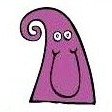
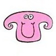

Выберите картинку, которая вам нравится больше всего.
- 
- 
1. Вы правильный.
Люди в вашем присутствии расслаблены. Вы от природы легки на подъем. Вы подлинные, вы цените уникальность каждого человека. Вы любите жизнь, всем довольны. Когда вы улыбаетесь или смеетесь, вам действительно смешно и радостно. Друзья ценят ваше доброе сердце, и для вас это лучший комплимент.2. Вы энергичный.
Окружающим может показаться, что вы хаотичный человек, но это всего лишь метод выражения вашего безумия. Должно быть, вы отлично жонглируете несколькими шарами в воздухе, ведь вы, безусловно, знаете, как работать в многозадачном режиме. Вы целеустремленный и полны мотивации. Вы жаждете успеха, и вы всегда следуете своим мечтам. Вы ответственно принимаете решения. У вас ясная голова на плечах.3. Вы стабильный.
Снаружи вы счастливчик и везунчик. Внутри же гораздо запутаннее. Вас немного тяжело читать, и вероятно вы так делаете умышленно. Вы не хотите выставлять ваши чувства напоказ. Вы достаточно зрелый, и можете не только брать, но отдавать людям. Общество является важным для вас. Вам нравится протягивать руку помощи, тем кто в ней нуждается.4. Вы добрый.
У вас широкий взгляд на жизнь. Вы понимающий, умеете прощать. Вы предпочитаете тихую, размеренную жизнь. Вам не нравится шум в вашей голове и в окружающем вас мире. Вы не знаете, что такое слишком много спокойствия. Иметь свободное время, чтобы просто поразмыслить о мире это роскошь для вас, вы ей дорожите.5. Вы безудержные.
Вы непредсказуемые, свихнувшиеся, хлопотные. Вы самая яркая лампочка в комнате. Вы как дикая езда. В жизни вы моторчик, который никогда не останавливается. Вы человек-идея. В вас всегда соревнуются обычное положение вещей и перемены. Вы не принимаете что-либо как данность.6. Вы позитивный.
Вы приятный человек. Трудно не заинтересоваться таким солнечным и оптимистичным человеком как вы. Вы активно интересуетесь миром вокруг вас. Вы не слишком далеко от ваших друзей. Вы пытаетесь наполнить каждый момент весельем, редко унываете. У вас отличное чувства юмора, все смеются над вашими шутками. Вы привлекаете людей, которые наслаждаются жизнью. Вы любите окружать себя радостью.7. Вы сочувствующий.
Вы скромный, вдумчивый, и добрый человек. Вам важны перспективы. Вы стараетесь привнести немного добра в этот мир. Вы верите, что каждый день надо стараться на полную. Возможно, у вас и не получится изменить мир, перевернуть его кардинально, но вы, безусловно, меняете жизнь людей. Вам нередко везет.8. Вы страстный.
Вам нужна настоящая любовь, вы беспокоитесь, что никогда не найдете ее. Вы оптимист и очень приятный человек, однако, у вас на сердце немало шрамов. Вы ищите понимание и прочную человеческую связь. Вы заводите друзей на всю жизнь. На людях вы стараетесь быть легким на подъем и простым. Жизнь ведь и так, сложная штука.9. Вы мудрый.
Вы получаете удовольствие от хорошей книги. Вам нравится блуждать в чужих мирах. Вы глубокий мыслитель и гибкий человек. Вы открыты для новых идей и изменений. Вы порядочный и честный. Самое важное для вас — оставаться верным себе. Вы умный, обладаете широким кругозором, очень независимый. Вы очень многим в себе гордитесь, однако вы не выставляете это напоказ.